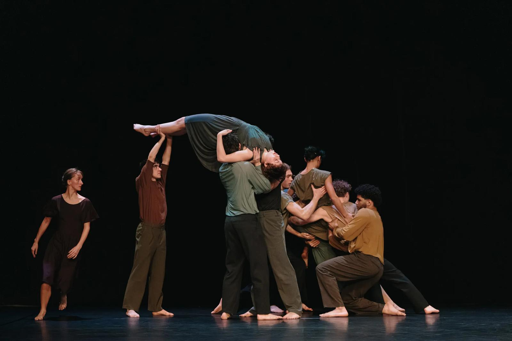
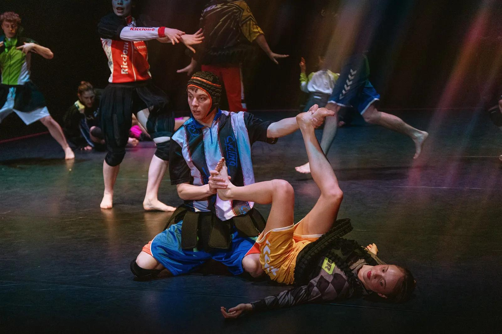

Spectacle de danse
Jeune Ballet du CNSMD Lyon
Carnet de danse
Ce spectacle est composé de quatre créations chorégraphiques distinctes avec durée moyenne de vingt minutes chacune. L’objectif est d’explorer le rapport entre l'individu et le groupe à travers des styles très variés. Le programme fait dialoguer le travail de quatre chorégraphes : Adi Boutrous (approche organique), le Collectif ES (énergie commune), Mathieu Guilhaumon (néoclassique) et Tania Carvalho (univers de l’inconscient). On peut voir cette soirée comme un véritable « carnet de danse » voyageant entre performance athlétique et émotion pure.
Analyse des quatre actes

Acte 1 (Adi Boutrous)
Douze danseurs portent des costumes aux couleurs neutres comme du vert sapin, du bleu marine, du gris ou encore du noir et dans une matière fluide. Les filles portent des robes et les garçons des ensembles pantalon/haut. Une forte unité se dégage du groupe, même si plusieurs actions se déroulent simultanément. Il n’y a pas de musique, seulement un son aigu par moments. La chorégraphie est très poétique avec une lumière douce et avec des alternances de pauses et d'accélérations. C'est un acte très acrobatique avec beaucoup de portés comme de l'acrosport. Cette chorégraphie a été répétés deux fois à la suite, provoquant un ressenti d'étonnement et d'incompréhension.

Acte 2 (Collectif ES)
Le contraste est total avec des costumes de sport hyper colorés. On dénombre quinze à seize interprètes qui évoluent de manière individuelle, créant un mouvement qui part dans tous les sens. La lumière est plus vive et la musique est très dynamique, intégrant des cris et des boucles musicales. On y retrouve beaucoup de références à la culture jeune comme des danses TikTok et des expressions populaires comme « Marseille bébé ». Au fil de l'acte, des habits noirs et fluides avec des froufrous sont ajoutées aux costumes. Cette chorégraphie et répétée au moins 8 fois, avec des variantes à chaque passage.

Acte 3 (Mathieu Guilhaumon)
Cet acte revient à un style ballet plus classique avec six danseurs dont trois filles et trois garçons. Les costumes se composent de bas gris et de hauts pastels par binôme. Les filles commencent en chaussures de ballet avant de passer en chaussettes. La chorégraphie se déploie sur une douce musique au piano. La mise en scène joue énormément sur les jeux de lumière et d'ombre, dans une ambiance générale plutôt sombre. Certains danseurs restent parfois statiques et observent, tandis qu'un ou deux individus décrochent parfois du groupe.

Acte 4 (Tania Carvalho)
Le dernier acte commence au ralenti dans une ambiance très reposante et une musique très calme avec des bruits de nature (eau, vent, oiseaux). Les costumes sont des habits longs transparents aux bras et aux jambes, avec des débardeurs et shorts rouges ou marrons dessous. Une fille en noir reste statique au centre tout le long, montant progressivement les mains dans la lumière. Les autres danseurs traversent la scène en diagonale autour d'elle au ralenti, entrant chacun leur tour en différé. Après être tous sortis, ils rentrent à contre-sens en formant un groupe qui progresse comme une vague. D’un coup, la musique s'accélère brutalement, les mouvements passent à vitesse réelle et des cris éclatent. Puis d’un coup le chaos s'arrête net, la musique se coupe et tous sortent sauf la fille centrale qui redescend ses mains et finit par partir.
Source photos : https://cnsmd-lyon.fr
Scénographie, lumières et univers sonore
La scénographie du spectacle est marquée par un dépouillement total : il n’y a pas de décors matériels sur le plateau. Tout l'espace est sculpté par la lumière et la musique, qui créent l'identité de chaque acteLa scénographie du spectacle est marquée par un dépouillement total : il n’y a pas de décors matériels sur le plateau. Tout l'espace est sculpté par la lumière et la musique, qui créent l'identité de chaque acte.
L'espace sonore
La musique dicte le rythme et l'émotion. Dans l'acte 1, le choix du quasi-silence force l'attention sur le souffle et le contact des corps. À l'inverse, l'acte 2 sature l'espace avec une musique dynamique, des boucles sonores. L'acte 3 apporte une rupture mélancolique avec le piano, tandis que l'Acte 4 propose un voyage sensoriel en commençant par des bruits de nature avant de basculer dans une musique rapide et des cris.
Lumière comme décor
En l'absence d'objets, la lumière sculpte le plateau. Elle est douce lors du premier acte pour accompagner la poésie des portés. Elle devient vive pour l'acte coloré du Collectif ES, puis sombre avec de nombreux jeux d'ombres pour le ballet classique. Le final propose un véritable tableau visuel avec un faisceau fixe qui éclaire la fille statique au centre, avant qu'une lumière rouge ne vienne souligner l'accélération brutale et l'angoisse des danseurs.
Bilan personnel
Ce spectacle m’a marquée par sa capacité à passer d'une sobriété extrême à une saturation d'énergie intense. J’ai été particulièrement touchée par le dernier acte avec le contraste entre sa lenteur initiale, très reposante et sa rupture brutale qui créent une émotion brute très forte. Mais personnellement ce genre de spectacle ne raisonne pas en moi, j’ai trouvé qu’il était très particulier avec ces répétitions de chorégraphies et le premier acte m’a mis mal à l’aise en l’absence de musique.